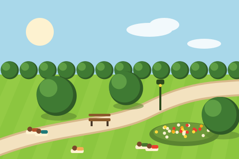
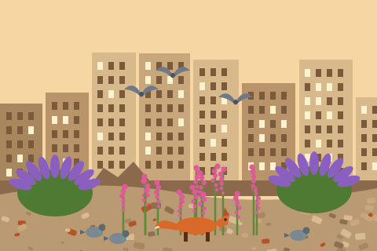
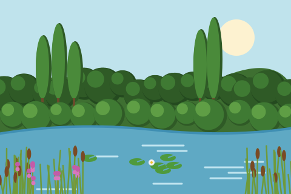
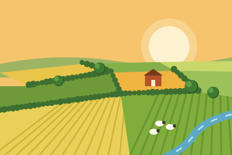

Explore the scenarios
Drag, zoom and hover. Switch scenarios from the bottom-left corner of the map.
We can all agree that urban parks are great! They offer us a break from the grey and allow us to just relax in nature. But did you ever stop and wonder what this nature you love so much actually is?

Humans first! A park designed to minimise stress and maximise well-being, that's it!
See it on the map →
What if London's nature isn't wetlands and beavers anymore but rather pigeons, foxes and parakeets? Welcome to the Fourth-Nature Park!
See it on the map →
What if we could restore London to its former natural state? Goodbye pigeons and shrubs and hello beavers and wetlands!
See it on the map →
What's the best use of space in a city, if not houses? Food!
See it on the map →Drag, zoom and hover. Switch scenarios from the bottom-left corner of the map.